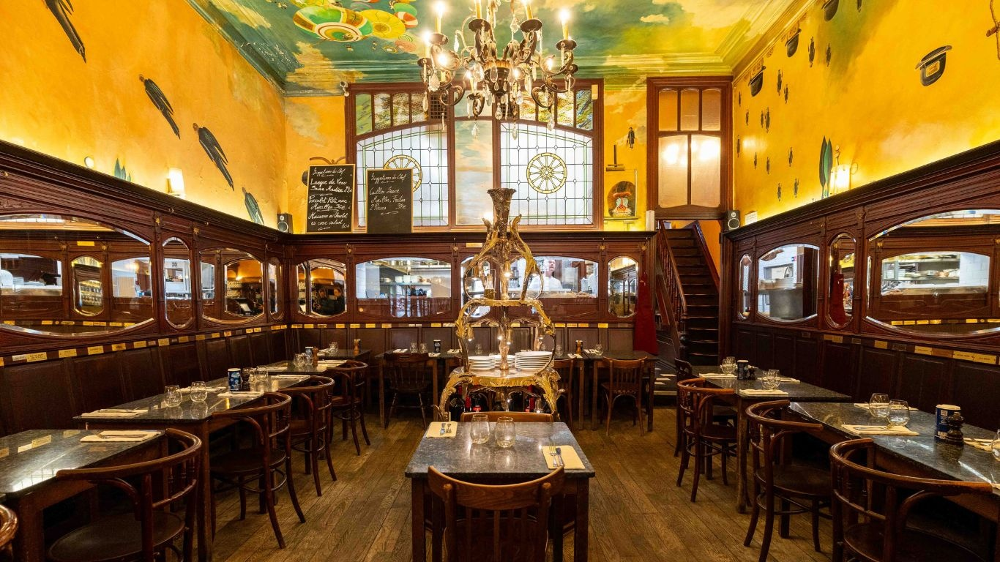

Accueil

Restaurant akdao,dzjfdiznmqnj
Nouveauté à Lyon 8
Renseignements & réservations au 04 72 56 56 02
Parking privé – Wifi gratuit.
Pour plus d'information sur nos contacts, cliquez ici :
LA CARTE
description carte
Les Entrées
- Pressé de jarret de veau, chutney de poires et condiments acidulés. - 37 €
- Velouté de carottes, gingembre, cacahuètes grillées et crème fouettée aux herbes - 39 €

Les Plats
- Poitrine de veau confite, écrasé de potimarron parfumé à l’orange et au cerfeuil, potimarron confit et jus de bœuf. - 78 €
- Filet de maquereau rôti, purée d’oseille, chou-fleur, céleri, épinards et fumet de poisson crémé 101 - €
- Ris de veau rôti au sautoir, Salsifis et champignons - 97 €
- Duo de pigeon d’Anjou et foie gras, Déclinaison de choux et bière ambrée - 112 €
- Cœur de faux filet des montagnes d’Auvergne, Panais et sauce au poivre 123 €
Les Fromages
- Fromages de nos régions,Sélectionnés par Fromagerie La Mère Richard - 57 €
Les Desserts
- Soufflé chaud au sarrasin, Sorbet au cidre - 49 €
- Poire en textures, Sablé aux noix et bergamote - 45 €
- Crémeux au café, Parfum toasté et caramel - 45 €
- Fraicheur de citron, Condiment céleri et croustillant anisé - 43 €
Réservation
Notre restaurant vous accueille du mardi soir au samedi soir inclus, au déjeuner et au dîner.
- De 12 h 00 à 13 h 15 pour votre déjeuner
- De 19 h 30 à 21 h 15 pour votre dîner
Pour réserver une table, cliquez ici :